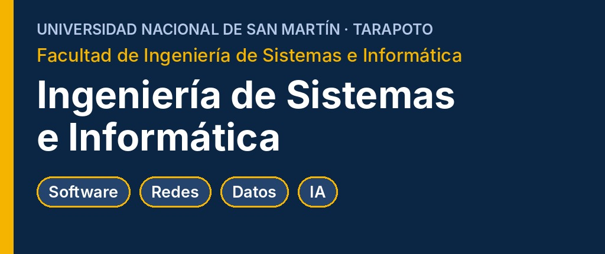
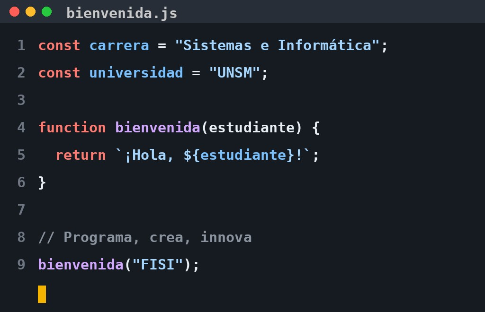
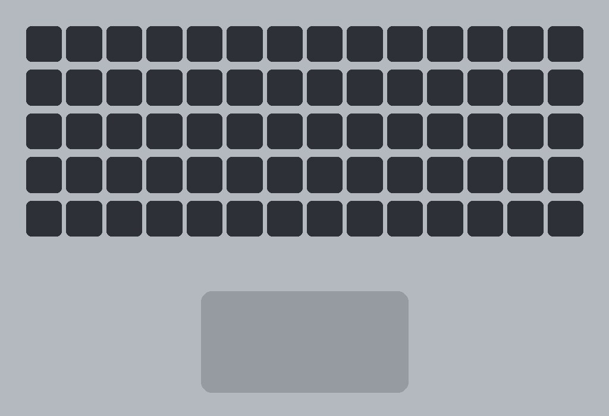

Carné aumentado UNSM
Toca Comenzar, permite el uso de la cámara y apunta a la parte delantera de tu carné universitario.
Ingeniería de Sistemas e Informática
Toca Comenzar, permite el uso de la cámara y apunta a la parte delantera de tu carné universitario.
Ingeniería de Sistemas e Informática

